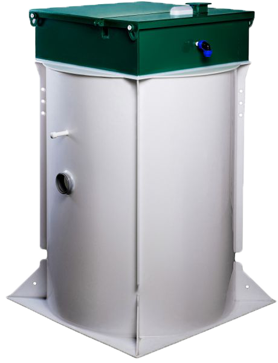
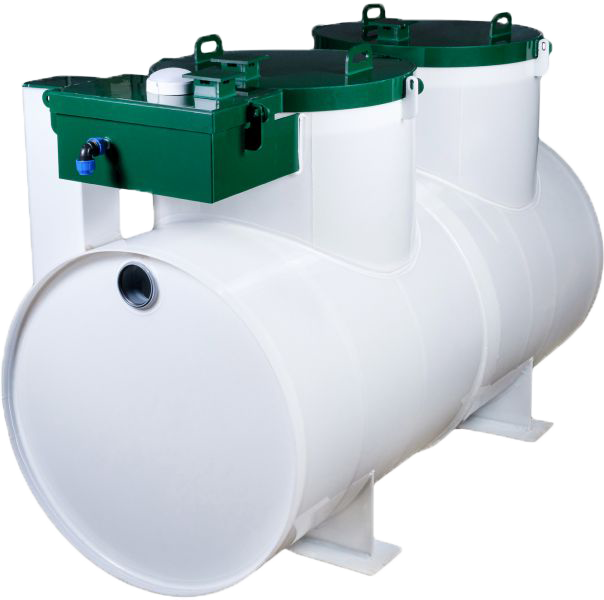
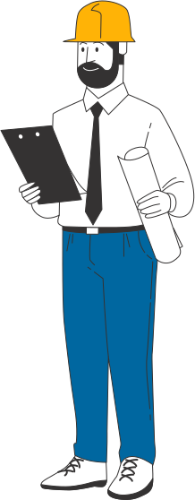

 
Продажа и установка септиков и станций биологической очистки в Чувашской Республике
Канализация под ключ с выгодой до 20 % от прямого производителя
Узнайте стоимость септика со скидкой и получите подбор подходящих моделей

Канализация под ключ с выгодой до 20 % от прямого производителя
Узнайте стоимость септика со скидкой и получите подбор подходящих моделей


Весьма востребованы в канализациях частных домов, дач. Конструктивно состоит из ряда камерных отсеков, одним из которых является дренажный колодец (септик с участком грунтовой фильтрации). Канализационные стоки очищаются в несколько этапов. На первом, стоки перемещаются между сообщающимися камерами по мере осаждения твёрдых взвесей. Из последней жидкость подаётся на почвенный фильтр, где доочищается, а вода уходит в грунт. Плюс, система энергонезависима, что позволяет использовать её круглогодично в любом месте. Ассенизационной машиной из накопительного резервуара откачиваются отходы.
Накопительные септики Выбираются в следующих случаях: в качестве альтернативы современному оборудованию для очистки, выбор которого является вынужденным решением, при невозможности установки первого; есть желание сэкономить; жильё используют для сезонного проживания. Представляет подземную герметичную ёмкость, требующую периодической очистки ассенизационной машиной.
Специфика работы септиков подобного вида заключается в очистке сточных вод с использованием бактерий (анаэробных, аэробных). Двойное действие обеспечивает значительную степень очистки. Имеющаяся органика в стоках разлагается на воду, газ, нерастворимые осадки. Последний периодически удаляется ассенизаторской машины, газ выходит в атмосферу, техническая вода, в дренажный колодец.
Последний содержит две группы бактерий, анаэробные, аэробные. Протекающие сквозь него стоки, благодаря высокой степени очистки, разлагаются на простые составляющие. Для повышения степени очистки стоки равномерно распределяются по поверхности биофильтра. Фильтр монтируется в септике, отдельной ёмкости, либо работает, благодаря принудительному орошению. Требует периодической очистки от ила, являющегося продуктом жизнедеятельности работающих бактерий.
| Монтаж септика | |||
|---|---|---|---|
| Услуга | Цена в рублях | ||
| Монтаж септика производительностью до 0,6 м3/сутки | от 18 000 руб. | ||
| Монтаж септика производительностью до 0,8 м3/сутки | от 19 000 руб. | ||
| Монтаж септика производительностью до 1 м3/сутки | от 20 000 | ||
| Монтаж септика производительностью до 1,2 м3/сутки | от 24 000 руб. | ||
| Монтаж септика производительностью до 1,8 м3/сутки | от 26 000 руб. | ||
| Монтаж септика производительностью до 2 м3/сутки | от 30 000 руб. | ||
| Монтажные работы | |||
| Подводящая траншея (с материалом и работой) глубиной до 0,9 м | от 1 050 руб./м | ||
| Отводящая траншея (с материалом и работой) глубиной до 0,3 м | от 750 руб./м | ||
| Монтаж фильтрующего/аспределительного жб колодца (2 кольца + крышка) | от 14 000 руб. | ||
| Устройство рассасывающей траншеи (с материалом, без щебня) | от 750 руб./м | ||
| Монтаж инфильтратора | от 3 500 руб. | ||
| Монтаж пластикого колодца | от 2 000 руб. | ||
| Указанные цены носят информационный характер и не являются публичной офертой. | |||
Данная услуга подходит желающим сэкономить, выполнив земляные работы своими силами, получая консультации по порядку действий от квалифицированного инженера нашей компании, и не теряя гарантию на оборудование. Данная услуга позволяет выполнить обустройство автономной канализации на участке своими силами под надзором профессионала, не испортив дорогостоющее оборудование.
Порядок действий при заказе услуги шеф-монтаж септика под ключ:

В случае необходимости делаем все замеры у вас на объекте.

Монтаж оборудования в среднем за 7,5 часов осуществляет квалифицированная бригада.

Вы принимаете работу и наслаждаетесь комфортом в своем загородном доме и отдыхаете на свежем воздухе.